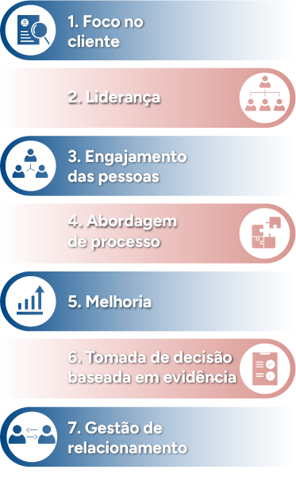

Princípios de gestão da qualidade
Para que as organizações atinjam um desempenho satisfatório, é essencial ter níveis de qualidade apropriados para as demandas de um mercado cada vez mais exigente. O conhecimento tornou-se uma ferramenta de impacto direto na qualidade dos produtos e serviços. Superar as expectativas dos clientes é, hoje, uma estratégia competitiva, um diferencial para quem deseja ter eficiência de gestão e conquistar o sucesso.
Para guiar as organizações no direcionamento dos seus esforços, fornecendo a capacidade para enfrentarem os desafios na busca por processos e produtos que conquistem os clientes e atendam aos seus objetivos estratégicos, alcançando os resultados desejados, a norma ISO 9000 fundamentou os sete princípios de gestão da qualidade:
- Foco no cliente
- Liderança
- Engajamento das pessoas
- Abordagem de processo
- Melhoria
- Tomada de decisão baseada em evidência
- Gestão de relacionamento
A compreensão desses princípios é essencial para os profissionais técnicos em qualidade, proporcionando as habilidades necessárias na busca pela excelência e eficácia na gestão da qualidade. Para entender cada princípio e como colocá-los em prática, confira o podcast a seguir.